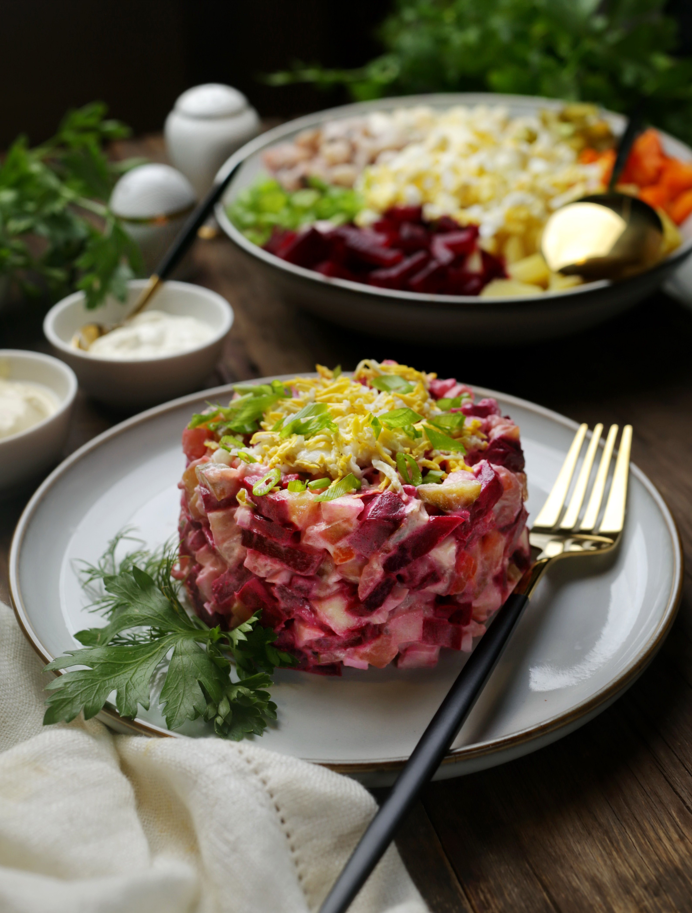

Эстонский салат для тех, кто любит винегрет и селёдку под шубой. Этот салат — «два в одном», хотя одновременно не похож ни на тот, ни на другой, но, несомненно, очень аппетитный. Свёкла, картошка, морковь, лук, селёдка, варёные яйца, солёные или маринованные огурцы и яблоко — вот основной набор продуктов. Подобный салат встречается в финской, шведской и латышской кухне, только с небольшими нюансами и под разными названиями: «Рассоли», «Расолс», «Росоли». При этом иногда одним из дополнительных ингредиентов выступает мясо: кусочки отварной или обжаренной говядины или свинины. Заправляется салат сметаной и горчицей, иногда пополам с майонезом, а иногда к сметане добавляется хрен, лимонный сок или уксус. Соотношение свёклы, селёдки и картошки должно быть относительно равным, нарезка — кубиками размером с горошину (5–7 мм) или небольшими тонкими брусочками. Солёные или маринованные огурцы следует добавлять по вкусу, в зависимости от солёности селёдки. Яблоко же лучше выбрать с кислинкой, хотя небольшая сладость добавит вкусу салата контраст и глубину. Слишком сладкие сорта брать не стоит, остановитесь на чём-то среднем. Готовый салат можно украсить зеленью и рубленым яйцом.